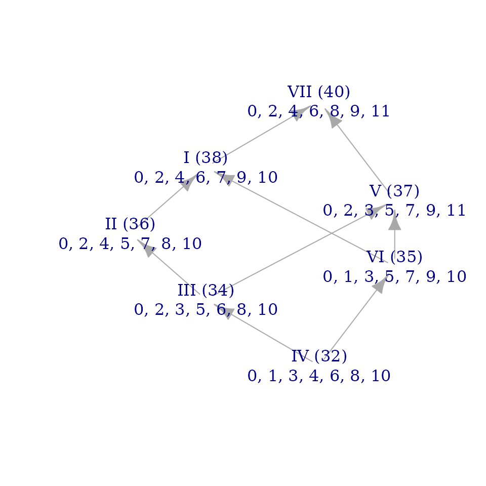
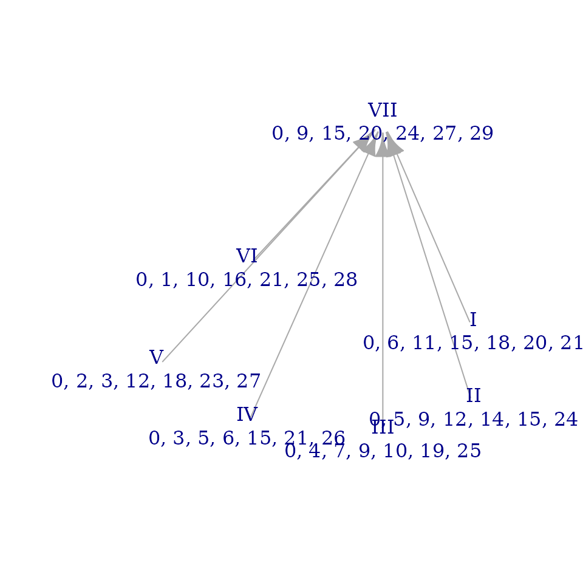
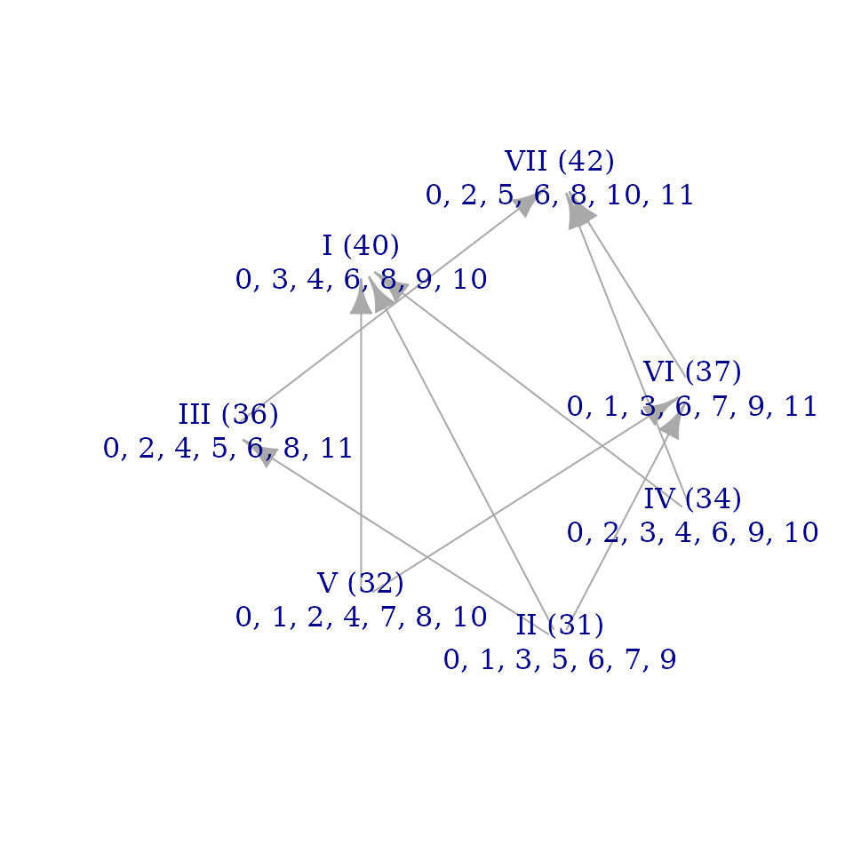

Introduction
The goal of musicMCT is to provide computational tools for the study of musical scales. It includes functions that will probably be familiar to music theorists from pitch-class set theory in the vein of Allen Forte’s The Structure of Atonal Music (1973). For instance, we can calculate the interval-class vector of the diatonic scale (Forte’s set class 7-35) as follows:
The top line of the block above is what you would input to R; the
bottom line is the output of the function. Ignore the [1],
which just indicates that you’re seeing the beginning of the output. The
ic-vector is 2 5 4 3 6 1 as we’d expect.
The main purpose of the package, however, is not to reproduce
traditional pc-set theory but to let us explore the geometry of musical
scales described in “Modal Color Theory” (Sherrill 2025, Journal of
Music Theory 69/1: 1-49). As that article explains, seven-note
scales live in a 6-dimensional geometry populated by 1,824,229
qualitatively distinct scalar structures. I’m happy to calculate an
ivec() by hand, but we’re going to need computers to
explore such a complicated space!
This vignette will introduce many of the main functions of musicMCT that serve this purpose, especially as they relate to the concerns of the Journal of Music Theory article. The problem that we’ll discuss is not of deep significance, but I hope a toy example will teach you how to use this software and give you a sense of the kinds of questions that deeper study might get into.
How acoustic is the “acoustic scale”?
1. Introducing the main characters
A familiar object from the theory of 20th-century music is the scale
(C, D, E, F-sharp, G, A, B-flat). This is the fourth mode of melodic
minor. We can verify that fact by defining the melodic minor scale for R
and then calling sim(), the package’s function for finding
the modes of a scale:
melodic_minor <- c(0, 2, 3, 5, 7, 9, 11)
sim(melodic_minor)
#> [,1] [,2] [,3] [,4] [,5] [,6] [,7]
#> [1,] 0 0 0 0 0 0 0
#> [2,] 2 1 2 2 2 2 1
#> [3,] 3 3 4 4 4 3 3
#> [4,] 5 5 6 6 5 5 4
#> [5,] 7 7 8 7 7 6 6
#> [6,] 9 9 9 9 8 8 8
#> [7,] 11 10 11 10 10 10 10Note the top line’s syntax, which defines the melodic minor scale.
We’ll be using it a lot! The arrow <- assigns the value
on the right side to the variable name on the left side. The
c( ... ) on the right side of this statement is the
standard way to tell R to treat a bunch of things as a single
collection. (See [c()]. musicMCT also has a couple functions that are
meant to mimic [c()] while letting you enter intervals as
just-intonation frequency ratios instead of pitch-space distances: see
[j()] and [z()].)
Pitch-classes are represented by numbers: C=0, C-sharp = 1, and so on. For familiar sets in 12edo (12 equal divisions of the octave), these are all integers. Later we’ll see that it’s easy to work with integers in any k edo. But the values that define our scales don’t have to be integers at all: Modal Color Theory works in continuous pitch-class space. For instance, here’s a common just tuning of the major scale (Ptolemy’s “intense” or “syntonic” diatonic):
j(dia)
#> [1] 0.000000 2.039100 3.863137 4.980450 7.019550 8.843587 10.882687Getting back to melodic minor, the function sim() above
computes the scalar interval
matrix of a set (as defined by Tymoczko
2008), which presents to us the modes of a scale as the columns of
the matrix. Our input, the melodic minor scale, is in the first column,
and the scale we want to study can be read from the fourth column of the
SIM:
sim(melodic_minor)[, 4]
#> [1] 0 2 4 6 7 9 10Just to practice using R, let’s pretend that we’ve forgotten how to interpret pitch-class integers and that we therefore need to verify that those numbers do correspond to the notes (C, D, E, F-sharp, G, A, B-flat). We’ll do that by checking the voice leading from C major to this scale:
c_major <- c(0, 2, 4, 5, 7, 9, 11)
minimize_vl(c_major, sim(melodic_minor)[, 4])
#> [1] 0 0 0 1 0 0 -1As Tymoczko 2007 points out, key signatures are essentially just voice leadings from the C major scale to another heptachord, and here we’ve found a voice leading that raises the fourth step (F) a semitone while lowering the seventh step (B). So the numbers (0, 2, 4, 6, 7, 9, 10) do indeed correspond to the scale (C, D, E, F-sharp, G, A, B-flat).
Now, this scale is sometimes called the “acoustic” scale because in some sense it is close to a seven-note chunk of the overtone series. Our task in this vignette is to use musicMCT to see how real that similarity is. Let’s agree to call these two scales the “acoustic” and “overtone” scales, respectively.
The overtone scale is defined by treating the 7th through 13th harmonics of the overtone series as a scale (noting that the 14th harmonic is an octave above the 7th). We’ll convert that into semitone measurements as follows:
overtones <- 7:13
frequency_ratios <- overtones / 7
semitone_values <- 12 * log2(frequency_ratios)
overtone_scale <- sim(semitone_values)[, 2]
print(overtone_scale)
#> [1] 0.000000 2.039100 3.863137 5.513179 7.019550 8.405277 9.688259Let’s find the voice leading from the overtone scale to the acoustic scale, since voice leading distance offers an approximate measure of musical similarity (as Callender, Quinn, and Tymoczko 2008 argue):
acoustic_scale <- sim(melodic_minor)[, 4]
minimize_vl(overtone_scale, acoustic_scale)
#> [1] 0.00000000 -0.03910002 0.13686286 0.48682058 -0.01955001 0.59472338
#> [7] 0.31174094Intuitions about voice leading distances can be tricky, but this
initially doesn’t seem like a big distance between the two scales. The
average amount that each voice has to move is about 23 cents (a quarter
of a semitone). On the other hand, our voice leading from C major to C
acoustic was also pretty small: the average distance an individual voice
had to move there was about 29 cents (2/7 of a semitone). Thus, by one
measure, the acoustic_scale is about as good of an
approximation of c_major as it is of the
overtone_scale!
We need better tools than mere voice-leading distance to think about scale similarity. One is the idea of quantization, which we’ll address in the next section. We’ll see that it doesn’t tell the whole story either.
2. A few supporting characters
The normal justification for calling the acoustic_scale
“acoustic” is that it’s what you get if you simply round the values of
the overtone_scale to the nearest integer (in 12edo):
round(overtone_scale, digits=0)
#> [1] 0 2 4 6 7 8 10Wait a second, that’s not even the acoustic scale! It has two consecutive semitones (6, 7, 8) and actually represents sc7-33, the “whole-tone plus one” scale. What’s going on here!?
Tymoczko
(2013, 130) explains that there’s really no such thing as
the quantization of the overtone_scale. There are
7 different quantizations. The rounding above unfairly privileges C
(0) as a note that’s guaranteed not to move. If we treat
all the degrees of the scale more equally, sometimes a different note
gets to stay fixed. Let’s try it.
If the scale’s tonic starts on a 12edo integer, it won’t change when
we quantize the scale. Transposing the whole scale up 1 semitone by
using tn(), we should expect to get essentially the same
quantization, just with 1 added to every value:
round(overtone_scale, digits=0)
#> [1] 0 2 4 6 7 8 10
round(tn(overtone_scale, 1), digits=0)
#> [1] 1 3 5 7 8 9 11To find the other possible quantizations, we need to explore the
range of transpositions where the scale’s tonic is some value
0 < x < 1. If we transpose the
overtone_scale so that it starts on every cent (i.e.
hundredth of a semitone) in that range, that should be a fine enough
sampling to encounter every quantization:
amounts_to_transpose <- (0:99)/100
transposed_scales <- sapply(amounts_to_transpose, tn, set=overtone_scale)
quantized_scales <- apply(transposed_scales, 2, round, digits=0)
unique_quantizations <- unique(quantized_scales, MARGIN=2)
print(unique_quantizations)
#> [,1] [,2] [,3] [,4] [,5] [,6] [,7] [,8]
#> [1,] 0 0 0 0 1 1 1 1
#> [2,] 2 2 3 3 3 3 3 3
#> [3,] 4 4 4 4 4 5 5 5
#> [4,] 6 6 6 6 6 6 6 7
#> [5,] 7 7 7 8 8 8 8 8
#> [6,] 8 9 9 9 9 9 9 9
#> [7,] 10 10 10 10 10 10 11 11We’re almost there, but some of the scales start on 0 and some on 1. The eighth column is just \({T_1}\) of the first. So let’s make them all start on zero to double-check that they’re truly unique:
unique_quantizations_from_0 <- apply(unique_quantizations, 2, startzero)
final_quantizations <- unique(unique_quantizations_from_0, MARGIN=2)
colnames(final_quantizations) <- apply(final_quantizations, 2, fortenum)
print(final_quantizations)
#> 7-33 7-34 7-31 7-28 7-29 7-27 7-34
#> [1,] 0 0 0 0 0 0 0
#> [2,] 2 2 3 3 2 2 2
#> [3,] 4 4 4 4 3 4 4
#> [4,] 6 6 6 6 5 5 5
#> [5,] 7 7 7 8 7 7 7
#> [6,] 8 9 9 9 8 8 8
#> [7,] 10 10 10 10 9 9 10And thus we really do get exactly the seven quantizations that
Tymoczko predicts. Of these seven, is there any reason to think that the
acoustic_scale is a better quantization than the other
possibilities? Tymoczko proposes one perspective: of the 100 scales in
transposed_scales, how many of them quantize to
each of the seven final_quantizations? This is easy to
answer too (though here I’m going to gloss over the details of the code
that gets these numbers):
#> 7-33 7-34 7-31 7-28 7-29 7-27 7-34
#> 11 37 2 2 13 18 17That is, the WT-plus-1 scale that we first quantized to accounts for
about 11% of the range of quantizations, whereas there are two distinct
modes of melodic minor (sc7-34) which together account for 54% of the
quantizations. The first mode, which is the acoustic_scale
proper, accounts on its own for 37%–definitely the lion’s share of
them.
This lends credence to conventional view, suggesting that the
acoustic_scale might be a preferable quantization of the
overtone_scale even if it isn’t the only
quantization.
3. But what about scale structure?
So far we’ve used some of the tools of musicMCT but we haven’t really applied the concepts of Modal Color Theory. That’s because we’ve been treating the scales’ continuous voice-leading space as essentially undifferentiated, whereas the central argument of MCT is that there are discrete regions in the geometry that correspond to qualitative differences in scale structure.
MCT models scale structure by comparing intervals that belong to the same generic size. For instance, a big part of the character of the familiar major scale lies in the fact that most of its steps have the same size, except for \(\hat{3}\)-\(\hat{4}\) and \(\hat{7}\)-\(\hat{1}\) which are smaller (but match each other). MCT breaks this down into individual comparisons: is the step \(\hat{1}\)-\(\hat{2}\) bigger or smaller than the step \(\hat{2}\)-\(\hat{3}\)? Is the skip \(\hat{1}\)-\(\hat{3}\) bigger or smaller than the skip \(\hat{3}\)-\(\hat{5}\)? And so on.
How long before we have exhausted all the potential comparisons that
we could make? Each comparison corresponds to a hyperplane in the
geometry, and musicMCT offers a complete list of all the hyperplanes in
a matrix called an ineqmat (for “inequality matrix”). The
relevant matrix for four-note scales looks like this:
getineqmat(4)
#> [,1] [,2] [,3] [,4] [,5]
#> [1,] -1 2 -1 0 0
#> [2,] -1 1 1 -1 0
#> [3,] 0 -1 2 -1 0
#> [4,] -2 1 0 1 -1
#> [5,] -1 -1 1 1 -1
#> [6,] -1 0 -1 2 -1
#> [7,] -2 0 2 0 -1
#> [8,] 0 -2 0 2 -1Each row of the matrix represents a different pairwise interval
comparison: for tetrachords, we apparently need to consider 8 different
comparisons to have a complete accounting of a scale structure. Two
scales have the same structure (or belong to the same “color”) if they
answer all 8 comparisons in the same way. musicMCT summarizes this
information in a scale’s signvector(). For instance, let’s
consider set classes 4-6 (prime form 0127) and 4-24 (prime form 0248).
Here are their sign vectors:
signvector(sc(4, 6))
#> [1] 0 -1 -1 -1 -1 0 -1 0
signvector(sc(4, 24))
#> [1] 0 -1 -1 -1 -1 0 -1 0These vectors are the same, so MCT considers the tetrachords to have the same scalar structure. For instance, both start with two identical steps (0-1-2 and 0-2-4) and then have a larger leap (2-7 and 4-8).
For heptachords, the relevant ineqmat has 42 rows, so
the space of scale structures is considerably more complicated.
Generally you wouldn’t learn a lot from trying to read sign vectors
directly–musicMCT has more human-readable functions that will help you
interpret them–but let’s take a gander at them for the acoustic and
overtone scales:
signvector(acoustic_scale)
#> [1] 0 0 0 1 1 1 0 0 0 -1 1 1 1 0 1 0 0 0 -1 0 -1 1 1 1 1
#> [26] 1 0 1 1 0 0 0 -1 -1 -1 1 1 0 0 0 -1 -1
signvector(overtone_scale)
#> [1] 1 1 1 1 1 1 1 1 1 1 1 1 1 1 1 -1 -1 -1 -1 -1 -1 1 1 1 1
#> [26] 1 1 1 -1 -1 -1 -1 -1 -1 -1 1 1 0 -1 -1 -1 -1One visually apparent difference between these is that the
acoustic_scale has many more values of 0 in
its sign vector than the overtone_scale does. In fact, the
latter has only a single 0: all the rest of its
values are 1 or -1. What does this tell us
about the structure of the two scales?
Each entry in a sign vector is a comparison between two intervals in
a scale: both 1 and -1 mean that one interval
is bigger than the other, whereas a 0 means that the two
intervals are identical. For instance, the first 0 in the
sign vector for 0127 and 0248 is what encodes the fact that both of them
have a first step that equals their second step.
From this, we can see that the acoustic_scale is
considerably more regular than the overtone_scale,
in the sense that it has many specific interval sizes that repeat inside
it (like the 5 whole tones that dominate its generic steps, and the 4
perfect fifths that are the majority of its generic fifths). This
contrast between the scales isn’t too surprising. The
acoustic_scale is constrained to twelve-tone equal
temperament, so there are only so many intervals that it could possibly
be made up of. By contrast, the overtone_scale is defined
in continuous pitch-class space and has a lot more variety to choose
from. Moreover, given the logarithmic relationship between frequency
ratios and pitch intervals, each successive step in the overtone series
is smaller than the previous, so it makes sense that the
overtone_scale would have a lot of intervallic variety. If
anything, it’s surprising that it repeats any intervals.
We can learn what interval it does repeat by putting together the
information from the sign vector with the ineqmat for
heptachords. We could manually count which entry of the sign vector is a
0, but musicMCT also has a function for that:
whichsvzeroes(overtone_scale)
#> [1] 38We can now look at the row of the heptachordal ineqmat
to see what interval comparison it defines:
getineqmat(7)[whichsvzeroes(overtone_scale),]
#> [1] -1 -1 0 0 2 0 0 -1This tells us that the fourth above \(\hat{5}\) equals the fourth below \(\hat{5}\) in size. (See page 43 of “Modal
Color Theory” for a discussion of how to read the rows of an
ineqmat like this.) And, sure enough, this is true:
signed_interval_class(overtone_scale[5]-overtone_scale[1])
#> [1] -4.98045
signed_interval_class(overtone_scale[5]-overtone_scale[2])
#> [1] 4.98045If the acoustic_scale is to be an approximation of the
overtone_scale, we might want it to retain this repeated
interval, which it does: the perfect fourth from D to G matches the
perfect fourth from G to C. We could also verify that by checking that
the 38th entry of its sign vector is also 0:
signvector(acoustic_scale)[38]
#> [1] 0In fact, why don’t we consider all seven of the distinct quantizations from the previous section?
all_signvectors <- apply(final_quantizations, 2, signvector)
all_signvectors[38, ]
#> 7-33 7-34 7-31 7-28 7-29 7-27 7-34
#> 0 0 -1 1 0 0 0Most of them do match the overtone_scale on this point,
except for sc7-31 and sc7-28. Note that these are also the scales that
barely occurred at all as quantizations: each accounts for only about 2%
of all the quantizations according to the table at the end of the
previous section.
We can do better than looking at only position
38 in the sign vector. Why don’t we compare the entire sign
vectors at once? There are various ways to do this, but one that’s
simple to calculate is to treat the sign vectors as if they were real
vectors in a 42-dimensional space and compute their distances:
signvectors_with_overtone_scale <- rbind(signvector(overtone_scale), t(all_signvectors))
rownames(signvectors_with_overtone_scale)[1] <- "o.s."
dist(signvectors_with_overtone_scale)
#> o.s. 7-33 7-34 7-31 7-28 7-29 7-27
#> 7-33 4.795832
#> 7-34 5.000000 4.472136
#> 7-31 5.385165 5.291503 4.000000
#> 7-28 5.196152 5.656854 5.477226 4.472136
#> 7-29 5.099020 5.744563 6.403124 5.744563 4.358899
#> 7-27 3.605551 5.099020 5.830952 6.000000 5.291503 4.358899
#> 7-34 5.385165 4.472136 6.480741 6.324555 5.830952 5.567764 3.464102The first column above, labeled “o.s.” for
overtone_scale, represents the distance between the
overtone_scale’s sign vector and the 7 other sign vectors
(as labeled on the rows of the matrix). The other columns represent
distances among the various quantizations.
In a surprise upset, the quantization with the closest sign vector to
the overtone_scale is apparently sc7-27 as represented by
its mode (0, 2, 4, 5, 7, 8, 9). This doesn’t mean that sc7-27 is a
better quantization than the acoustic_scale, just
that it’s one that better reflects the structure of the
overtone_scale. (In particular, it comes closest to
capturing the fact that the overtone_scale’s step sizes get
smaller as you go up the scale. We’ll return to this consideration as we
approach our final approximation at the end of the next section.) The
modes of melodic minor simply have too much regularity–too many zeroes
in their sign vectors–to be very structurally similar to the
overtone_scale.
Another scalar property that we might consider is how many degrees of
freedom a scale has (“Modal Color Theory,” 26-27): how freely can you
vary its individual scale degrees while maintaining the same overall
structure? A minimally constrained heptachord has six degrees of
freedom, and we know that the overtone_scale has one zero
in its sign vector, which ought to make it lose a degree of freedom.
(Our choices about \(\hat{1}\) and
\(\hat{5}\) ought to determine where
\(\hat{2}\) goes.) Let’s compare the
overtone_scale’s freedom to its seven quantizations:
howfree(overtone_scale)
#> [1] 5
apply(final_quantizations, 2, howfree)
#> 7-33 7-34 7-31 7-28 7-29 7-27 7-34
#> 1 1 2 1 1 1 1All of these are much less free to vary than the
overtone_scale! All but sc7-31 can only vary along their
line of saturation (“Modal Color Theory,” 20), and sc7-31 is only a
little bit more flexible. This is a consequence of quantizing to
twelve-tone equal temperament, which simply doesn’t have enough distinct
notes to accommodate more flexible heptachords. We can check the degrees
of freedom of all 38 heptachordal set classes in 12edo:
all_12edo_heptachords <- sapply(1:38, sc, card=7)
heptachord_freedoms <- apply(all_12edo_heptachords, 2, howfree)
table(heptachord_freedoms)
#> heptachord_freedoms
#> 1 2
#> 11 27This table shows that there are 11 set classes with 1 degree of
freedom and 27 set classes with 2 degrees of freedom. None are freer
than that. If we were looking for an approximation of the
overtone_scale with similar structural properties (like 5
degrees of freedom), we unwittingly set ourselves up to fail by
restricting our attention to the twelve-tone chromatic universe.
4. Looking for better approximations outside of 12edo
If we are willing to quantize to other equal divisions of the octave, we can find much better structural approximations. In particular, musicMCT has a function that will find a quantized representative of any scalar color, in the lowest n-note equal division of the octave where such a quantization exists.
quantized_overtone_color <- quantize_color(overtone_scale)
print(quantized_overtone_color)
#> $set
#> [1] 0 6 11 15 18 20 21
#>
#> $edo
#> [1] 30Note that this function returns a list object. The first
entry of the list defines the scale itself: pitch class integers 0, 6,
11, 15, 18, 20, 21. The second entry tells us interpret those integers
in 30 equal divisions of the octave. If we want to use this as an input
to other functions, usually we only want the pitch-class values
themselves, which we can access as
quantized_overtone_color$set. We’ll need to tell most
functions to interpret that information in 30edo separately, usually by
setting the function’s edo parameter explicitly.
We should check this quantization in two ways. Let’s convert it to
twelve-tone equal temperament to get a sense for how objectively close
it is to the overtone_scale, and let’s verify that it
belongs to the same “color” as the overtone_scale by
verifying that it has the same sign vector as the scale it
approximates:
round(overtone_scale, digits=2)
#> [1] 0.00 2.04 3.86 5.51 7.02 8.41 9.69
convert(quantized_overtone_color$set, 30, 12)
#> [1] 0.0 2.4 4.4 6.0 7.2 8.0 8.4
isTRUE(all.equal(signvector(overtone_scale), signvector(quantized_overtone_color$set, edo=30)))
#> [1] TRUESo this quantization does indeed have all the same structural
properties as the overtone_scale, but its actual pitches
place it rather farther away than the acoustic_scale was.
This just reinforces the point that there’s no such thing as one single
quantization of a given scale: there are only different quantizations
that satisfy different equivalences we might choose to care about.
In that spirit, there’s yet another way to approximate the
overtone_scale which we haven’t yet considered. This form
of approximation uses the notion of adjacency between colors in
the hyperplane arrangement (“Modal Color Theory,” 31-34). If two scalar
colors are adjacent, one is a simplification of the other that preserves
some aspects of scalar structure while also enforcing a greater degree
of regularity on the scale. For instance, the major triad (0, 4, 7) and
the minor triad (0, 3, 7) are non-equivalent structures that are both
adjacent to the “neutral” triad (0, 3.5, 7). The neutral triad has only
two sizes of step (3.5 and 5) as opposed to the three step sizes for
major and minor (3, 4, and 5). It has a similar structure to them, in
that its last step (5 semitones from fifth to root) is larger than the
others, but it is more regular than major and minor because it makes no
distinction between its root-third and third-fifth intervals. Another
color adjacency which may be familiar to music theorists is the
relationship between the 5-limit just diatonic scale (Ptolemy’s “intense
diatonic”) and the meantone diatonic scale represented by (0, 2, 4, 5,
7, 9, 11) in 12edo. The just and meantone scales are similar in many
ways, but the meantone scale elides distinctions that the just diatonic
makes, such as the difference between major and minor whole tones. (The
meantone diatonic is named for this particular elision of
difference, since it averages out the sizes of the larger and smaller
just whole tones.)
With this in mind, let us ask: what more regular colors is the
overtone_scale adjacent to? We might first compare it to
the 12edo quantizations above. musicMCT lets us do this with the
function comparesignvecs(), which returns 1 if
two sign vectors represent adjacent colors, 0 if two sign
vectors are identical, and -1 if the colors are neither the
same nor adjacent.
overtone_sv <- signvector(overtone_scale)
apply(all_signvectors, 2, comparesignvecs, signvecY=overtone_sv)
#> 7-33 7-34 7-31 7-28 7-29 7-27 7-34
#> -1 -1 -1 -1 -1 -1 -1Alas, none of our 12edo quantizations are adjacent colors to the
overtone_scale! This isn’t surprising given the table of
sign-vector distances near the end of the previous section, but it
reinforces our conclusion that twelve-tone equal temperament isn’t the
temperament you’d choose if your only goal were to approximate these 7
overtones.
How do we find colors that are adjacent to the
overtone_scale? It isn’t as simple as making a minimal
change to the sign vector and creating a scale to match, since most
conceivable sign vectors don’t correspond to scales that can actually
exist. We could try to solve this problem from scratch, but luckily we
don’t have to: part of MCT is a map of all the colors that exist (for
scale sizes up to heptachords) and their adjacency relationships.
This map involves datasets that are too large to distribute with the musicMCT package. They can be downloaded from the GitHub repository modalcolortheory:
- representative_scales.rds (~80 MB) contains a list of all scalar colors for scales of 2-7 notes, with one concrete scale to represent each color
- representative_signvectors.rds (~10 MB) contains a list of their corresponding sign vectors
- color_adjacencies.rds (~130 MB) contains information about the adjacency relationships between all these colors (in the form of an adjacency list)
If you wish to work with this data, you should save the files in your
working directory, which you can find by calling getwd() in
R. Then import the files into your R session with the following
commands:
representative_scales <- readRDS("representative_scales.rds")
representative_signvectors <- readRDS("representative_signvectords.rds")
color_adjacencies <- readRDS("color_adjacencies.rds")The file representative_signvectors is particularly
useful because it enables us to assign a well-defined “color number” to
identify each color in a MCT hyperplane arrangement (“Modal Color
Theory,” 28). If you try to look up a scale’s color number without the
representative_signvectors saved, you’ll probably get a
NULL result:
colornum(overtone_scale)
#> NULLbut if you do have the file, you’ll discover that the
overtone_scale belongs to heptachord color
1824025. From this, we can look up an accounting of all
colors that are adjacent to it. color_adjacencies is
structured as a list in R, whose top level organization
reflects the size of the scales you are studying, so
color_adjacencies[[7]] contains all the information about
the geometry of seven-note scales. To find out which scales are adjacent
to color 1824025, we want the list element
color_adjacencies[[7]][[1824025]]. The following code won’t
work on your device unless you have color_adjacencies saved
and loaded into R, but its objective is to find the most regular scale
that the overtone_scale is structurally adjacent to:
os_adjacent_colors <- color_adjacencies[[7]][[colornum(overtone_scale)]]
os_adjacent_scales <- representative_scales[[7]][, os_adjacent_colors]
regularity <- apply(os_adjacent_scales, 2, countsvzeroes)
most_regular_approximation <- os_adjacent_scales[, which.max(regularity)]
quantize_color(most_regular_approximation)If that code runs on your device, it should tell you that the most
regular quantized approximation of the overtone_scale is
the scale (0, 2, 4, 6, 8, 10, 11) in 14-tone equal temperament.
Converted to familiar semitone measurements, this is the scale (0.00,
1.71, 3.43, 5.14, 6.86, 8.57, 9.43). To understand better how this scale
“regularizes” the overtone_scale, let’s consider the two
scales in terms of their ranked step sizes:
asword(overtone_scale)
#> [1] 6 5 4 3 2 1 7
best_simple_approximation <- convert(c(0, 2, 4, 6, 8, 10, 11), 14, 12)
asword(best_simple_approximation)
#> [1] 2 2 2 2 2 1 3This tells us that the overtone_scale starts with its
6th largest step and then ascends through progressively smaller step
sizes, until its final step from \(\hat{7}\) to \(\hat{1}\) uses the scale’s largest step
size.
Our best_simple_approximation reduces most of that
variety out of the step sizes: all the steps from its \(\hat{1}\) up to \(\hat{6}\) are equal. The only intervallic
variety that this approximation retains is that \(\hat{6}\) to \(\hat{7}\) is still the smallest step in the
scale, and \(\hat{7}\) to \(\hat{1}\) is still the largest step in the
scale.
By the logic of color adjacency, this is the most regular scale that
simplifies the structure of the overtone_scale without
contradicting any of its structure. By contrast, our original
acoustic_scale does flatly contradict aspects of the
overtone_scale’s structure. For instance, in the
acoustic_scale the step from \(\hat{4}\) to \(\hat{5}\) is smaller than the step from
\(\hat{5}\) to \(\hat{6}\), but in the
overtone_scale \(\hat{5}\)
to \(\hat{6}\) is smaller (because all
its step sizes get smaller until the last one). We can see that
contradiction by comparing the 10th place of their respective sign
vectors:
signvector(overtone_scale)[10]
#> [1] 1
signvector(best_simple_approximation)[10]
#> [1] 0
signvector(acoustic_scale)[10]
#> [1] -1The acoustic_scale is the odd one out here. It’s also,
in terms of voice-leading distance, not clearly closer to the
overtone_scale than our
best_simple_approximation is:
round(minimize_vl(overtone_scale, acoustic_scale), 3)
#> [1] 0.000 -0.039 0.137 0.487 -0.020 0.595 0.312
round(minimize_vl(overtone_scale, best_simple_approximation), 3)
#> [1] 0.000 -0.325 -0.435 -0.370 -0.162 0.166 -0.260It’s not easy to eyeball which one of those is a smaller
overall voice leading, partially because the answer to that question
depends on what measure of distance you want to use. (For those who care
about such things, the acoustic_scale is a closer
approximation using the taxicab norm, but our
best_simple_approximation is closer under the Euclidean and
Chebyshev norms.)
5. A tempered conclusion
It would make for a tighter narrative to end with a conclusive
declaration that our best_simple_approximation really is
the best way to quantize the overtone_scale. But reality
isn’t so simple! The best approximation for a scale depends on what
you’re trying to approximate for. This needs to be underscored, because
the attempt to justify certain scale structures as mathematically ideal
is probably the oldest tradition of European music theory. By using math
to talk about scales, Modal Color Theory may look like it contributes to
that tradition, when my goal with the theory is to do just the opposite.
The questions that MCT should be useful for are descriptive ones like
“If you’re using this scale, what can you do with it?” and “If you want
to do X, how can we find some scale Y to facilitate X?” Sami
Abu Shumays is right to decry as a fallacy “the idea that the
tunings of musical scales are the result of mathematical laws, rather
than cultural choices that intersect with acoustical realities.” My hope
for MCT is that its math lets us get deeper insight into the nature of
that intersection between cultural choice and acoustical affordance.
In the end, the acoustic_scale actually is a pretty
decent approximation for many purposes, especially if you’re limited to
the familiar 12 pitch-classes of the piano. Hopefully, though, this
vignette shows how we might, when musicking with different priorities,
come to make other choices–and how musicMCT can aid us in that
process.
Coda: Brightness graphs
Up to this point, we’ve done everything numerically, but “Modal Color
Theory” also has some visualization tools. The one I want to introduce
here is the “brightness graph,” which lets us visualize the
voice-leading relationships between a scale’s modes (and thus to some
degree the internal structure of the scale, as described in “Modal Color
Theory,” 7-11). Using musicMCT we can make quick mock-ups of brightness
graphs with brightnessgraph(). First let’s take a look at
the acoustic_scale:
brightnessgraph(acoustic_scale)
The information in this graph is displayed in the same way as Figure
2b of “Modal Color Theory” (p. 8), though you’ll notice a few
differences if you compare the article’s figure to the one in this
vignette. One difference is trivial: the mode at the bottom of our
figure here is mode IV whereas it’s listed as mode VII in the
Journal of Music Theory article. That’s just because the
article treats melodic minor as mode I whereas we’ve asked for the modes
of the acoustic_scale. (If you replace
acoustic_scale with melodic_minor in the
command above, you should get an identical graph with the roman numeral
labels shifted around.) Either way, the precise pitch values for all the
nodes are the same: the bottom mode in both graphs is (0, 1, 3, 4, 6, 8,
10).
The less trivial difference between the article and graph vignettes
is their overall shape. The function brightnessgraph()
determines the vertical position of graph nodes exactly as “Modal Color
Theory” describes, but it has less guidance for how to make decisions
about left-right placement of nodes. It produces graphs that are usually
legible but which may not clarify the underlying structure: I tend to
use the function as a first draft and then construct my own (ideally
more revealing) graphs by hand. For instance, the Figure 2b of “Modal
Color Theory” represents all \(T_2\)
relationships as vertical arrows, resulting in a graph whose overall
shape is a trapezoid. brightnessgraph() obscures the
predominance of \(T_2\) in the
structure of the scale by making the chain of whole steps bow out to the
left at the middle, giving the graph a diamond-like shape.
Let’s now take a look at the brightness graph for the
overtone_scale:
brightnessgraph(overtone_scale, numdigits=1, show_sums=FALSE)This looks pretty messy! The graph is less connected (i.e. there are
fewer arrows) and the vertical placement of its nodes seems haphazard.
This reflects the fact that the overtone scale has less regularity as
measured by its degrees of freedom or the number of zeroes in its
signvector(). Nevertheless, the graph still has some useful
information. Since the height of a mode corresponds to its sum
brightness, we can see those comparisons at a glance. We can also use
sum brightness relationships as a proxy for the relative height of
individual pitches in the scale: if a pitch serves as the tonic of a
very bright mode, the pitch itself is very low (“dark”) in relation to
the scale. Thus, since mode VII is at the top of our graph here, \(\hat{7}\) must be the darkest (relatively
lowest) pitch of the scale. Conversely, since mode III is at the bottom
of the graph, \(\hat{3}\) is the
brightest individual note of the scale.
Recall that one of the approximations we tested above was a
quantization of the overtone_scale to a division of the
octave into 30 steps. Let’s see what the brightness graph of that
approximation looks like:
brightnessgraph(quantized_overtone_color$set, edo=30, show_sums=FALSE)
That’s impressively close to the graph for the actual
overtone_scale! (In truth, we got a little lucky here: many
colors offer enough room for variation that
brightnessgraph() doesn’t always preserve such visually
obvious similarity.) Aside from a check that
quantize_color() works as intended, one other thing to note
from this example is that brightnessgraph(), like almost
all functions in musicMCT makes it convenient to work in other
“chromatic cardinalities” (i.e. number of unit steps to the octave)
besides 12edo. Just be careful not to make direct comparisons between
absolute values reckoned in different systems: note, for instance, that
the sum brightnesses for our 30edo quantization are all around 90
whereas they were about 36 in the brightness graph of the original
overtone_scale. That’s because we’ve changed our unit of
measurement to be 2.5 times smaller, so values like distances and sums
scale correspondingly.
You might find it instructive to explore the brightness graphs of the
remaining final_quantizations from above, which show
considerable variety from one to the next. This gives a glimpse of the
range of possible structures for seven note scales. Simply change the
number 4 in the line of code below to any value from
1 to 7 to check the different scales:
brightnessgraph(final_quantizations[, 4])
Finally, let’s take a look at the brightness graph for our
best_simple_approximation. I’m going to suppress its
listing of the pitch-classes in each mode, since without manual tweaking
they overlap to the point of illegibility:
brightnessgraph(best_simple_approximation, show_pitches=FALSE, show_sums=FALSE)This feels right to me. At a glance, it’s a lot like the graph for
the overtone_scale but without all the mess. All the modes
beneath VII are now neatly lined up on a single row at the bottom.
That’s the visual equivalent of our search for regularity and color
adjacency in the previous section. This is something I like about
brightness graphs: they summarize, in a picture or two, ideas that one
could spend several thousand words developing.